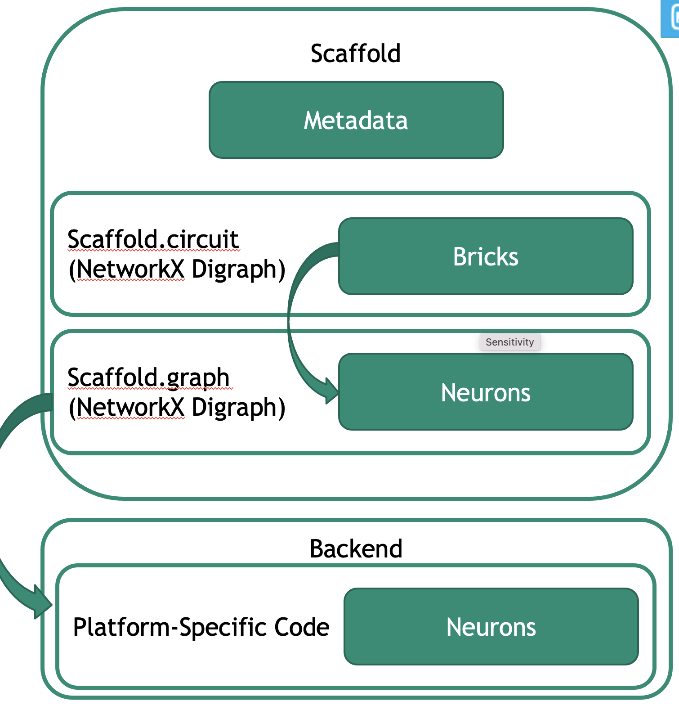
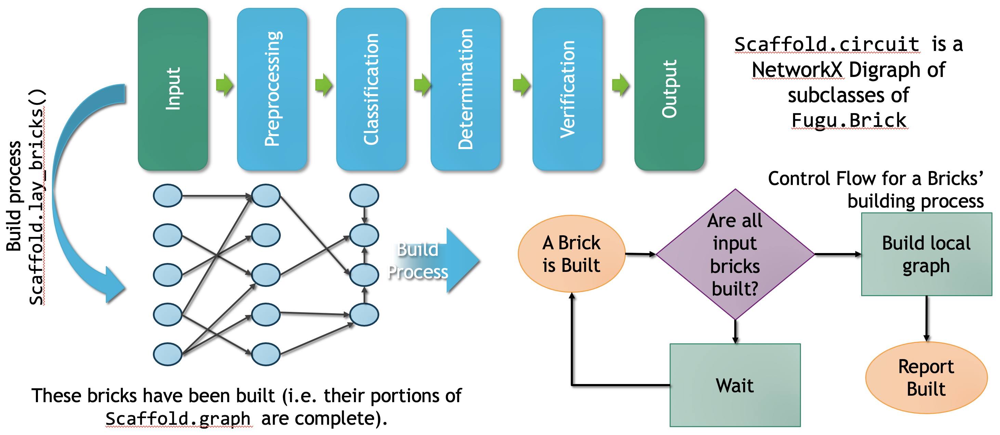
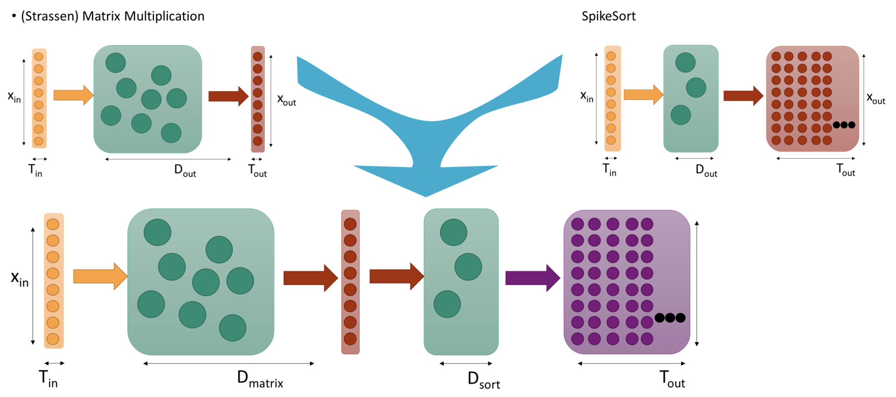

Fugu¶
What is Fugu?¶
Fugu is a high-level framework specifically designed for developing spiking circuits in terms of computation graphs. Accordingly, with a base leaky-integrate-and fire (LIF) neuron model at its core, neural circuits are built as bricks. These foundational computations are then combined and composed as scaffolds to construct larger computations. This allows us to describe the streaming binary arithmetic circuits in terms of neural features common to most NMC architectures rather than platform specific designs. In addition to architectural abstraction, the compositionality concept of Fugu not only facilitates a hierarchical approach to functionality development but also enables adding pre and post processing operations to overarching neural circuits. Such properties position Fugu to help explore under what parameterization or scale a neural approach may offer an advantage. For example, prior work has analyzed neural algorithms for computational kernels like sorting, optimization, and graph analytics identifying different regions in which a neural advantage exists accounting for neural circuit setup, timing, or other factors.
Think of Fugu as a framework to ease the process of coding and deploying algorithms on spiking neuromorphic systems. It is a managed IR between higher-level coding environments and low-level neuromorphic hardware and their compilers. Fugu’s front end is written in Python, and it leverages NetworkX library to construct and manage the Fugu generated neural circuit. Fugu has 3 components whih provide connection between API and compiler output during compilation. 1. A library of spiking neural algorithm (SNA) modules 2. a collections of algorithms for linking SNA modules 3. combined application graph output
Fugu IS¶
Fugu is a linking framework + It is “easy” to build spiking circuits for a single computation + It is hard to do application-level computation on neuromorphic + We provide a mechanism to combine small computational kernels (Bricks) into large computational graphs Fugu is a spec + For the Bricks to transfer information, we need to agree on data formatting + For computation to be consistent, we need to agree on neuron behavior (lowest common denominator*) + For this to be useful, we need a hardware independent intermediate representation
Fugu IS NOT¶
Fugu includes but is NOT a simulator + We include a reference simulator ds which can quickly run small-medium sized spiking networks + ds instantiates the fugu neuron model (discrete time, point synapses) + Fugu is designed to support a variety of backends including hardware platforms Fugu includes but is NOT a spiking algorithm + We are working to build fugu Bricks for many useful kernels + We are hoping that the community will help contribute Fugu includes but is NOT a graph utility + NetworkX provides (nearly) all of our graph functionality + Node and edge properties are inherent in NetworkX and only become meaningful when interpreted by a backend
API¶
Fugu’s API provides compatability with C++ and Python. The user defines a computational graph, termed scaffold. Within each scaffold nodes, called bricks are the component SNAs. Edges between bricks defines the flow of information.
Example¶
Suppose a simple application with 4 operations: 1. Function A processes an input. 2. Function B processes the output of A. 3. Function C processes the output of A. 4. Function D combines output of B and C. Fugu will construct a brick for each function A - D, and compose them into a larger algorithm scaffold as represented in the pseudocode below. The scaffold is a graphical representation of of the desired Fugu algorithm .. image:: images/pseudocode.png
- width
400
- alt
Simple 4 function pseudocode
Workflow for Fugu algorithm¶
 {kind=link}
{kind=link}
We forsee 3 user types: 1. User: This person develops algorithms and applications using Fugu, but may not fully understand spiking neural networks or neuromorphic hardware. Users should be expected to understand python and combine Fugu’s tools and functions. 2. Extenders: This person creates new spiking neural networks or adapts existing neural algorithms to the Fugu framework. At this level, coders will need to be familiar with spiking neural networks and NetworkX, but should not need to be concerned with details of the implementations behind Fugu and the target hardware. 3. Developers: This person helps develop the Fugu framework itself and provides backends to software and hardware platforms for execution. For this, it is necessary to be familiar with the entire stack, from python through spiking neural networks and the intricacies of a particular hardware platform. .. image:: images/component.png
- width
400
- alt
Fugu workflow
Bricks Basics¶
Bricks provides the framework for the scaffold to build a neural graph + Defines the main computational graph + Uses networkx graph objects Contains metadata + Synchronize with other bricks + Contains coding information + Neuron parameters
Each Brick represents one computational function. Bricks are attached to a Scaffold. Bricks have certain key properties: dimensionality: A dictionary containing information such as the input and output sizes, circuit depth (if defined), and the types of codings. self.supported_codings: A list of supported codings for this brick. A complete list of codings is avialable at input_coding_types . is_built: A simple boolean saying whether or not the brick as been built name: A string representing the brick
This function forms the section of the graph corresponding to the brick. Input parameters: - graph: graph that is being built - dimensionality: dictionary containing relevant dimensionality information - control_nodes: A list of dictionaries of neurons that transmit control signals. A ‘done’ signal (Generally one from each input) is included in control_nodes[i][‘complete’]. - input_lists: A list of lists of input neurons. Each neuron is marked with a local index used for encodings. - input_codings: A list of types of input codings. See input_coding_types
Output: a tuple (graph, dimensionality, complete_node, output_lists, output_codings) - graph: Graph that is being built - dimensionality: Dictionary containing relevant dimensionality information - complete_node: A list of neurons that transmists a ‘done’ signal (Generally one for each output) - output_lists: A list of lists of output neurons. Each neuron is marked with a local index used for encodings. - output_codings: A list of types of codings. See input_coding_types
{kind=link}
Neurons can be built ot relay control information between bricks. These should be included in control_nodes. Control_nodes is a list of dictionaries. Each entry in the list corresponds with an input (if calling Brick.build) or an output (if returning from Brick.build).
Scaffolds¶
The Scaffold object is a graph that contains bricks at each node. In reality, the Scaffold is only responsible for the organization of bricks. All functionality is held in the bricks themselves.
Backend¶
A backend generates platform-specific code from the platform-independent network graph (Scaffold.graph). Included in Fugu today is a backend to a basic reference simulator SNN and a backend that targets Intel’s Loihi platform.
Get Started¶
Installation - we recommend installing Fugu in a conda or virtual environment in Python 3.8. The requirements can be found in requirements3.txt - Dependencies include: Numpy, Scipy, NetworkX, Pandas, and Pytorch (for DS)
Jupyter Notebook examples - Walk through our Jupyter Notebook examples as a first step into the world of Fugu. These can be found in the examples folder, in a folder labeled notebooks. We’ve outlined how we translate common algorithms and problems into Fugu brick formation.
Documentation - We have documented many of the applicable python files for your reference in our docs page.
Fugu in publication - We have a folder with recent publications to familiarize you with some possible use cases.